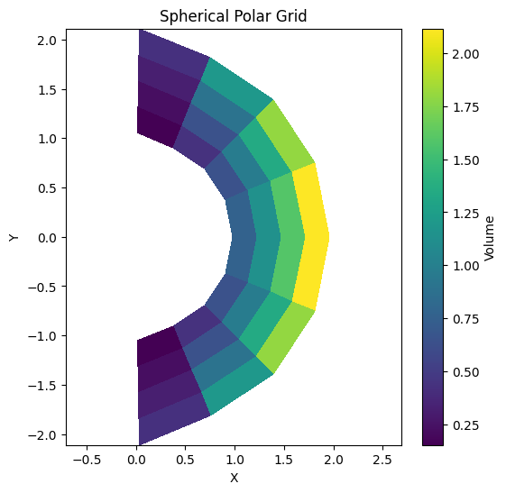

Spherical Polar Grid
[1]:
import numpy as np
import matplotlib.pyplot as plt
import pyro.mesh.boundary as bnd
import pyro.mesh.patch as patch
[2]:
import warnings
warnings.filterwarnings("ignore")
Demonstrating the grid with matplotlib pcolormesh
[3]:
g = patch.SphericalPolar(4, 8, xmin=1.0, xmax=2.0, ymin=0.0, ymax=np.pi, ng=2)
[4]:
print(g)
Spherical Polar 2D Grid: Define x : r, y : θ. xmin (r) = 1.0, xmax= 2.0, ymin = 0.0, ymax = 3.141592653589793, nx = 4, ny = 8, ng = 2
[5]:
g.V.pretty_print(fmt="%9.2g")
0.13 0.26 0.43 0.65 0.9 1.2 1.5 1.9
0.047 0.092 0.15 0.23 0.32 0.42 0.54 0.68
0.047 0.092 0.15 0.23 0.32 0.42 0.54 0.68
0.13 0.26 0.43 0.65 0.9 1.2 1.5 1.9
0.2 0.39 0.65 0.97 1.3 1.8 2.3 2.9
0.24 0.46 0.76 1.1 1.6 2.1 2.7 3.4
0.24 0.46 0.76 1.1 1.6 2.1 2.7 3.4
0.2 0.39 0.65 0.97 1.3 1.8 2.3 2.9
0.13 0.26 0.43 0.65 0.9 1.2 1.5 1.9
0.047 0.092 0.15 0.23 0.32 0.42 0.54 0.68
0.047 0.092 0.15 0.23 0.32 0.42 0.54 0.68
0.13 0.26 0.43 0.65 0.9 1.2 1.5 1.9
^ y
|
+---> x
[6]:
r = g.x2d[g.ilo:g.ihi+1, g.jlo:g.jhi+1]
theta = g.y2d[g.ilo:g.ihi+1, g.jlo:g.jhi+1]
x = r*np.sin(theta)
y = r*np.cos(theta)
plt.figure(figsize=(6, 6))
plt.pcolormesh(x, y, g.V.v(), cmap='viridis', shading='auto')
plt.colorbar(label='Volume')
plt.title('Spherical Polar Grid')
plt.xlabel('X')
plt.ylabel('Y')
plt.axis('equal')
plt.show()
